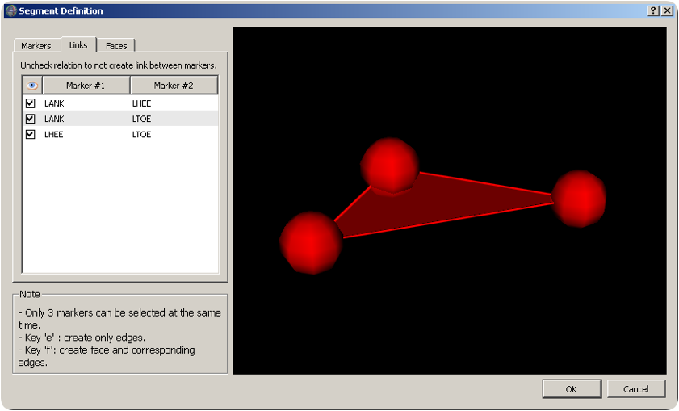
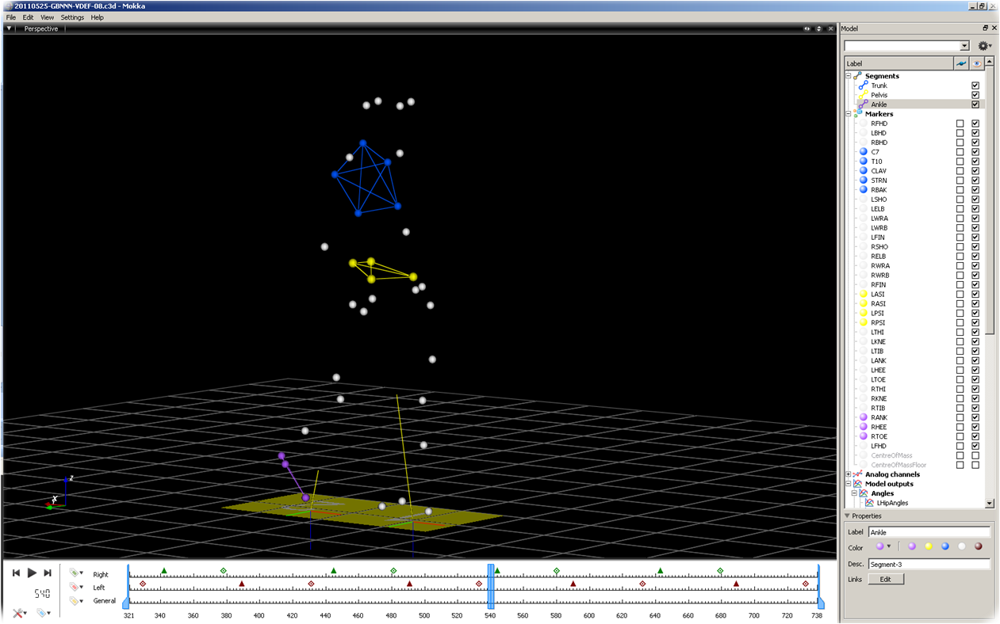

To create a new segment you can proceed this way:
- Use the Left click and Ctrl and/or Shift to select all markers you want to use to create your segment
- Right click on the window and choose New Segment from the drop down menu
- You can edit the segment using the Label and Description

Dialog box to create a segment.
- The new segment will be added into the Model panel
- You can change the color of the segment’s lines by selecting your segment and apply a specific color in the properties color section. The color of the markers can also be modified.
- To edit displayed links between markers you can click on the segment and in its properties click on the button "Edit".

Segment and its properties displayed.